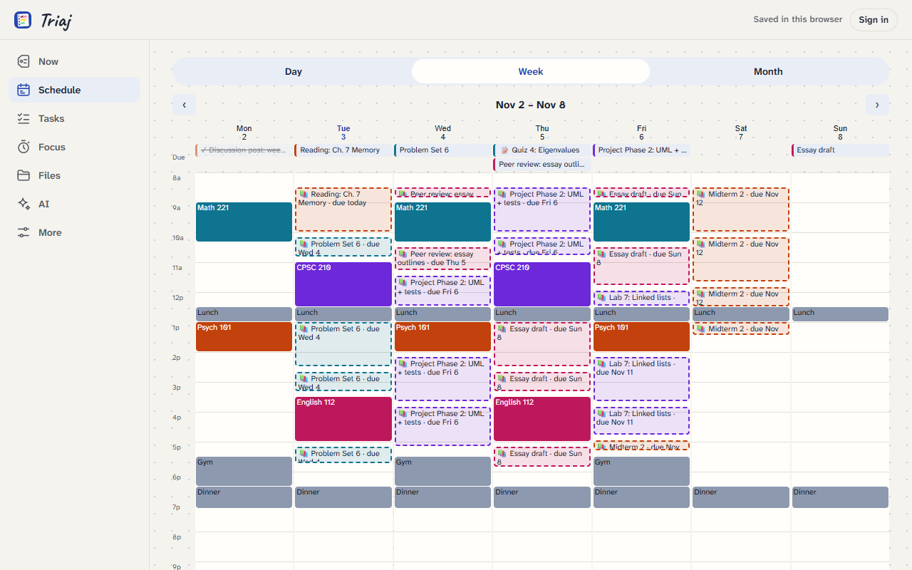
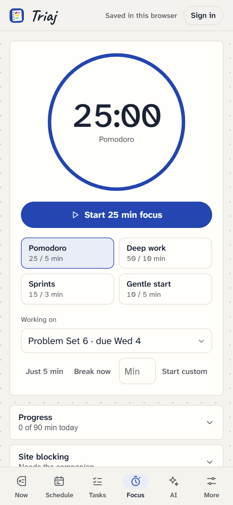
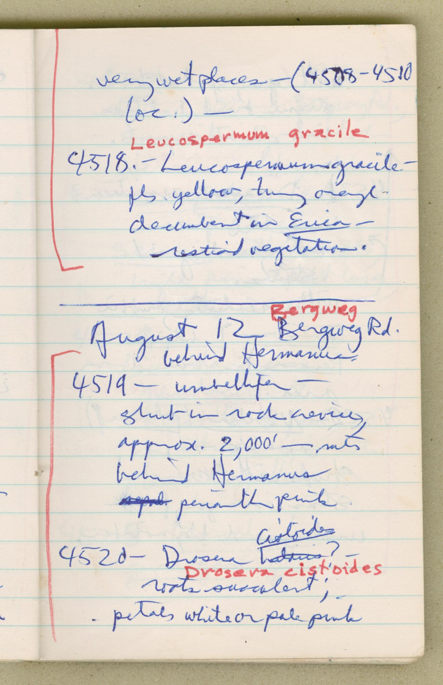

Know what to do next.
Triaj is a student planner that reads everything due in Canvas, highlights it as now, soon or later, and plans when you'll work on each one around your classes.

Now
Soon
Later
Sorted like your notes
Now is what needs you today: due soon and not started, or bigger than the time left. Triaj puts the one to start first at the top.
One week with Triaj
Sunday night
Canvas syncs. Three new assignments, a quiz date and a moved deadline arrive without copying a thing.
Monday morning
The plan fills your gaps. Study blocks land between lectures, your shift and the gym.

Monday, 2 pm
Do this next. One task, how long it takes, and a button for 25 minutes.

Tuesday
A focus round. Reddit turns into a back-to-focus page until your break.

Wednesday
A due date moved. Triaj changes it, or asks if you'd set it yourself.

Thursday
Stuck? Ask for a first step, or turn one sentence into three tasks.
Friday
Submitted. Canvas says it's in, Triaj ticks it off. The weekend is yours.
Questions, answered
- Free, with no ads or trackers.
- Same planner on your phone, laptop and any browser.
- Works offline once it's installed.
How do I put it on my phone?
Triaj installs like an app: its own icon, full screen, works offline. Your tasks are already there when you sign in.
- iPhone and iPad: open Triaj in Safari, tap Share, then Add to Home Screen.
- Android: open Triaj in Chrome and tap Install, or menu, then Install app.
- Computer: click the install icon at the end of the address bar in Chrome or Edge.
What is the companion extension?
Browsers won't let a website read your Canvas with your sign-in, which is a good rule. So on your computer, a small extension does the parts a website can't: Canvas and private calendar sync, the toolbar timer, site blocking and saving course files. It never stores your planner, and it only reads sites you allow.
Download the companionHow do I install the companion?
- Unzip
triaj-companion.zipinto a folder you'll keep, like Documents. - Open
chrome://extensions(oredge://,brave://,opera://extensions) and turn on Developer mode. - Press Load unpacked and choose that folder. Pin the Triaj icon so the timer is one click away.
- In Triaj, open More, then Sync, enter your Canvas address and press Connect.
- Unzip
triaj-companion.zipinto a folder you'll keep. - Open
about:debugging#/runtime/this-firefox, press Load Temporary Add-on and choosemanifest.jsonin that folder. - In Triaj, open More, then Sync, and press Connect.
- Firefox removes temporary add-ons when it quits. Firefox Developer Edition can keep it: set
xpinstall.signatures.requiredto false inabout:config, then install the zip from the add-ons page.
Who can see my planner?
Only you. Your planner, and any Canvas token or AI key you add, is stored in your own account. There are no ads, analytics or trackers. Canvas data goes from Canvas to your browser to your account, and AI requests go straight from your browser to the provider you pick. Without an account, everything stays in that one browser.
Do I need Canvas?
No. Add tasks yourself, type one sentence and let it make the tasks, or subscribe to an iCal feed. Canvas just saves the typing.
What does the AI cost?
Nothing from us. You bring your own key: free with Gemini, or use Claude. It suggests a plan or a first step, and nothing changes until you press Apply.
Your syllabus is already in Canvas. Let Triaj read it for you.
Start this week
Sign in with Google or email, or just start in this browser. Free, on every device.
Open Triaj